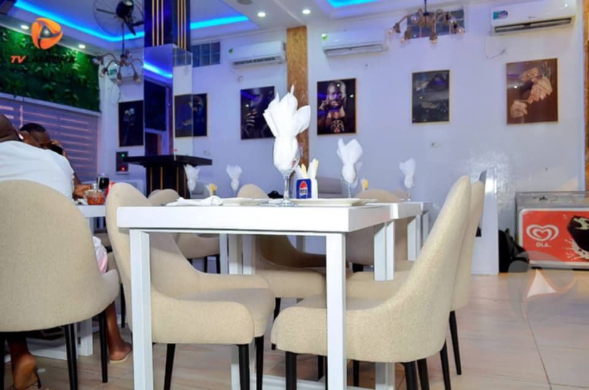

O Restaurante MM nasceu com o objetivo de proporcionar uma experiência gastronómica única, unindo sofisticação, conforto e sabores inesquecíveis.
Trabalhamos com pratos cuidadosamente preparados, ambientes exclusivos e um atendimento pensado para transformar cada visita em um momento especial.
Localizado em Cacuaco, Balumuka, o Restaurante MM oferece um espaço ideal para encontros familiares, reuniões de negócios e celebrações memoráveis.
Fazer Reserva